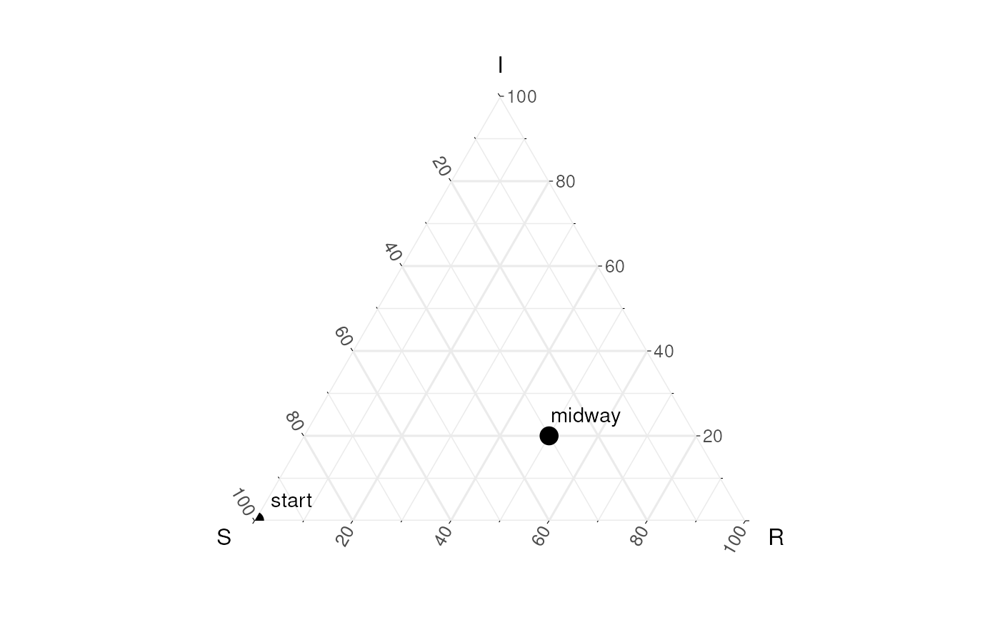
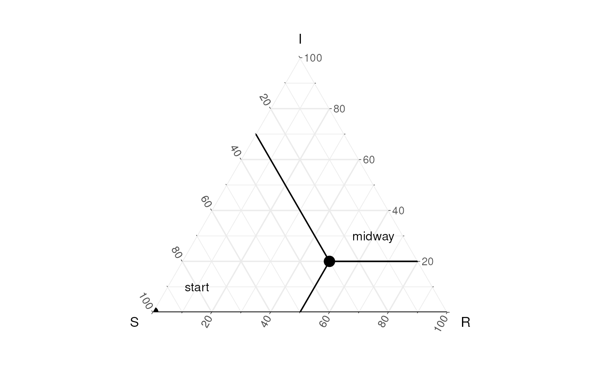
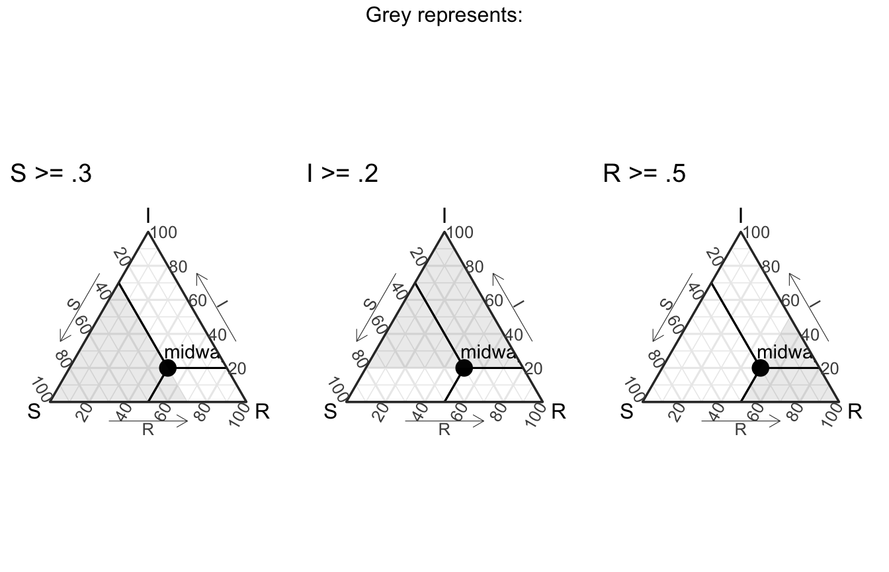

Ternary Plots: Explained
Source:vignettes/not-built-vignettes/ternary-plots-explained.Rmd
ternary-plots-explained.RmdIntroduction to Ternary plots
A ternary plot is a “triangular” plot that represents is used to represent relative proportions of 3 quantities. In this package we encourage the use of ternary plots to example the change in proportions of a population who are Suspectible, Infected, and have Recovered from a disease (more commonly refered to as an SIR model). Ternary plots are also used in chemistry and other physical sciences.
Because ternary plots aren’t that common in epidemogolgy (yet 😉), so we thought it would be useful to introduced them in more detail here, so that users can feel more comfortable interpreting them.
Mathematical foundation (can be skipped)
In many epidemic models, even beyond SIR models (e.g. SEIR), examining the follow of individuals into different states is very useful. These situations (where we examine proportions in set number of states) can be thought of as existing in a unit simplex. Unit simplices (the pural of simplex), are defined as
\[ \{ x \in \mathbb{R}^p \;|\; x_i \geq 0 \text{ for } i \in \{1,...,p\},\; \sum_i^p x_i = 1\} \]
Our ternary plots are a specific case where \(p\) is equal to 3. In 3d the unit simplex actually looks like the following:
And a ternary plot is just a projection of this simplex onto a 2d surface.
How the axes and locations of the plot really work
As mentioned above, ternary plots are oftern to show proportions. For example we could see the proportion of a population that are suspectible start out at 100%, which would mean that no one was Infected or Recovered, in the SIR model with would look like a point (1,0,0). Likewise, me might see, midway through the epidemic, that 30% of people were still not infected (aka still Suspectible), 20% were currently infected and the rest had recoved - this would look like the point (.3,.2,.5).
We could plot these two points like done in the following plot.

Looking at the above figure, we can start to get our head around how these points lie on the graphic relative to the simplex they exist in. To identify the values associated with our “midway” point, we can draw 3 lines from each axis to the point (like seen below).

But does that even really help us / what is it showing us? Well, to make it more clear, it’s useful to think of each axis line to be associated with the dimension that ends with “100” (to denote 100%). For example, we could create a region of points where the value of S is greater than a specific threshold, and then varying it iteratively to get the following visual (I’ve excluded the points for now).

Similarly, we can do that will all the axes (in the following visual).

In this way, we should be able to think about the midway point with these 3 plots in mind (also note that the following plots use theme_sir() which provides useful arrows for your axes):

How to do this with ggtern?
The ggtern package, which we leverage inside EpiCompare, allows for ggplot2 style coding, and also rescales values if they are not in proportions. Below are 3 examples to demonstrate these things.
# just the data data <- data.frame(S = c(1,.3), I = c(0,.2), R = c(0,.5), labels = c("start", "midway")) data_unscaled <- data.frame(S = c(200, 60), I = c(0, 40), R = c(0, 100), labels = c("start", "midway"))